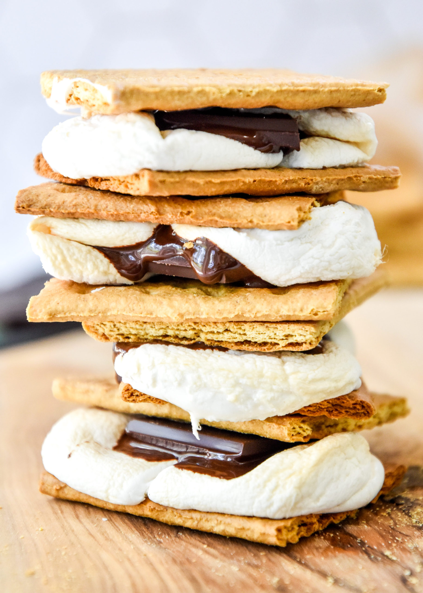

Cozy S'mores

Description:
What screams "cozy at home vibes" more than s'mores?
Made with just graham crackers, chocolate, and marshmallows, this treat is simple yet delicious.
Originating as a popular campire treat usually prepared in an open fire, this recipe allows one to enjoy s'mores without an open flame.
Ingredients:
- Whole graham crackers
- Chocolate bars (milk or dark chocolate, whichever you prefer)
- Regular sized marshmallows
Steps:
- Preheat oven to 350 °F
- Line a large baking sheet with foil or parchment paper.
- Break the whole graham crackers along the scored line and place half of each cracker on the baking sheet. Make sure you save half of the graham cracker for after the s'mores are done in the oven.
- Place one square chocolate on each cracker
- Place one standard sized-marshmallow on top of each piece of chocolate
- Put the pan in the heated oven for about 4-6 minutes at 350 °F, or as long as it takes for your oven to melt and soften the chocolate-marshmallow concoction
- Remove the pan from the oven and place the other half of the graham crackers on top
- Make sure to serve while still warm and gooey for the ultimate coziness.
- Enjoy!